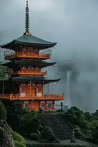
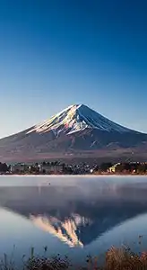
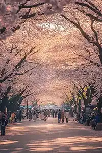
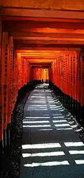
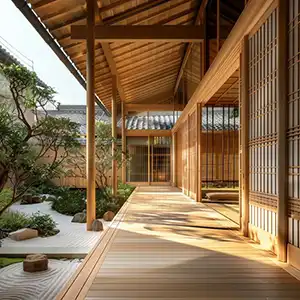
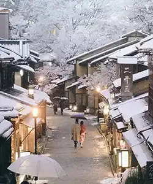

Japan Gallery
Explore images that capture some of the beauty, culture, food, and landscapes that make Japan such an exciting travel destination.






Explore images that capture some of the beauty, culture, food, and landscapes that make Japan such an exciting travel destination.





